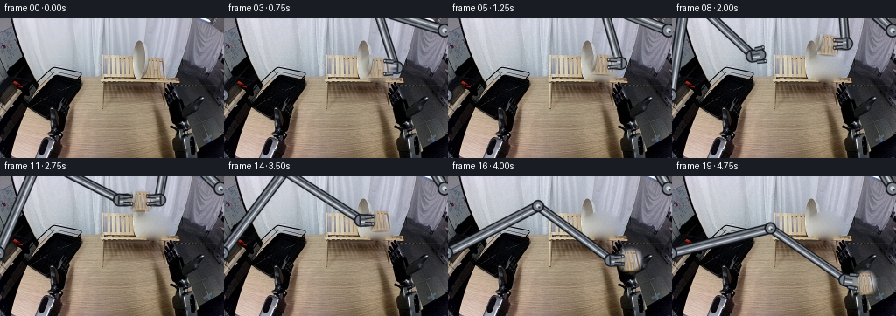
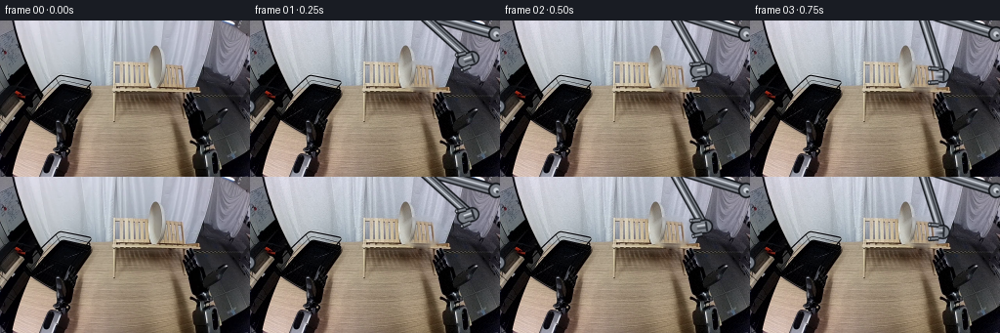
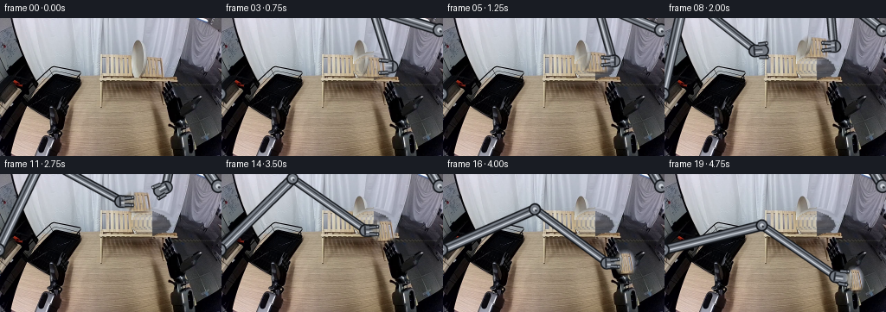
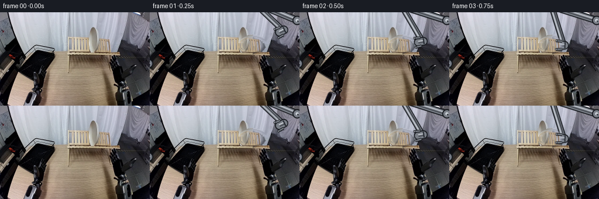

CODING AGENTS AS PIXEL WORLD MODELS
traex/DeepSeek-V4.1-Flash · common50_0034
点击播放 · 原生 RGB 像素
逐轮保存的候选
回放视频、检查图与代码变化。
每份候选均可单独播放。实际图片检查记录在下方工具轨迹中。
候选 01播放与检查图
点击播放 · 原生 RGB 像素

展开代码变化
--- 上一保存版本
+++ 本次保存版本
@@ -0,0 +1,493 @@
+from __future__ import annotations
+
+import math
+from pathlib import Path
+
+import numpy as np
+from PIL import Image, ImageDraw, ImageFilter
+
+import artifact_io
+
+
+ROOT = Path(__file__).resolve().parent
+WIDTH = 256
+HEIGHT = 160
+FRAMES = 20
+
+
+def smoothstep(t: float) -> float:
+ t = max(0.0, min(1.0, t))
+ return t * t * (3.0 - 2.0 * t)
+
+
+def lerp(a, b, t):
+ return a + (b - a) * t
+
+
+def lerp_point(a, b, t):
+ return (lerp(a[0], b[0], t), lerp(a[1], b[1], t))
+
+
+def ellipse_mask(
+ width: int,
+ height: int,
+ cx: float,
+ cy: float,
+ rx: float,
+ ry: float,
+ feather: float = 1.0,
+) -> np.ndarray:
+ yy, xx = np.mgrid[0:height, 0:width]
+ r = np.sqrt(((xx - cx) / max(rx, 1e-3)) ** 2 + ((yy - cy) / max(ry, 1e-3)) ** 2)
+ if feather <= 0:
+ return (r <= 1.0).astype(np.float32)
+ return np.clip((1.0 - r) * feather + 0.5, 0.0, 1.0).astype(np.float32)
+
+
+def make_clean_plate_background(source: np.ndarray) -> np.ndarray:
+ """Remove the plate with a small, texture-preserving diffusion fill."""
+ bg = source.astype(np.float32).copy()
+ h, w = bg.shape[:2]
+ mask = ellipse_mask(w, h, 175.5, 56.2, 16.2, 12.4, feather=1.2) > 0.02
+
+ filled = bg.copy()
+ for y in range(h):
+ xs = np.flatnonzero(mask[y])
+ if not len(xs):
+ continue
+ lo = max(0, int(xs.min()) - 1)
+ hi = min(w - 1, int(xs.max()) + 1)
+ if lo == hi:
+ filled[y, xs] = bg[y, lo]
+ continue
+ t = (xs - lo) / float(hi - lo)
+ filled[y, xs] = (
+ bg[y, lo][None, :] * (1.0 - t[:, None]) + bg[y, hi][None, :] * t[:, None]
+ )
+
+ # Jacobi diffusion keeps the repair close to the surrounding wall and wood.
+ work = filled.copy()
+ for _ in range(90):
+ avg = (
+ np.roll(work, 1, axis=0)
+ + np.roll(work, -1, axis=0)
+ + np.roll(work, 1, axis=1)
+ + np.roll(work, -1, axis=1)
+ ) * 0.25
+ work[mask] = avg[mask]
+
+ # Recover a little of the fine sensor texture instead of leaving a smooth patch.
+ rng = np.random.default_rng(34)
+ noise = rng.normal(0.0, 2.0, size=(h, w, 1))
+ work = np.clip(work + noise, 0, 255)
+ return work.astype(np.uint8)
+
+
+def make_plate_sprite(source: np.ndarray) -> tuple[Image.Image, tuple[float, float]]:
+ """Extract the light plate with a soft elliptical edge."""
+ x0, y0, x1, y1 = 155, 39, 197, 74
+ crop = source[y0:y1, x0:x1].copy()
+ cx, cy = 175.5 - x0, 56.0 - y0
+ alpha = ellipse_mask(x1 - x0, y1 - y0, cx, cy, 16.2, 12.7, feather=2.2)
+ # Keep a little less background at the extreme top and bottom of the ellipse.
+ yy = np.arange(y1 - y0)[:, None]
+ alpha *= np.clip(1.0 - np.maximum(0.0, np.abs(yy - cy) - 9.0) * 0.08, 0.0, 1.0)
+ rgba = np.dstack([crop, np.round(alpha * 255.0).astype(np.uint8)])
+ return Image.fromarray(rgba, mode="RGBA"), (cx, cy)
+
+
+def warp_plate(
+ sprite: Image.Image,
+ source_center: tuple[float, float],
+ center: tuple[float, float],
+ scale: tuple[float, float],
+ angle_deg: float,
+) -> Image.Image:
+ angle = math.radians(angle_deg)
+ c, s = math.cos(angle), math.sin(angle)
+ sx, sy = scale
+ scx, scy = source_center
+ cx, cy = center
+ # PIL expects the inverse mapping, from output pixels back to sprite pixels.
+ a = c / sx
+ b = s / sx
+ d = -s / sy
+ e = c / sy
+ coeffs = (a, b, scx - a * cx - b * cy, d, e, scy - d * cx - e * cy)
+ return sprite.transform(
+ (WIDTH, HEIGHT),
+ Image.Transform.AFFINE,
+ coeffs,
+ resample=Image.Resampling.BICUBIC,
+ )
+
+
+def composite_rgba(base: np.ndarray, layer: Image.Image) -> np.ndarray:
+ bg = Image.fromarray(base, mode="RGB").convert("RGBA")
+ bg.alpha_composite(layer)
+ return np.asarray(bg.convert("RGB"), dtype=np.uint8)
+
+
+def solve_ik(
+ base: tuple[float, float],
+ wrist: tuple[float, float],
+ l1: float,
+ l2: float,
+ prefer_high: bool = True,
+) -> tuple[tuple[float, float], tuple[float, float]]:
+ bx, by = base
+ wx, wy = wrist
+ dx, dy = wx - bx, wy - by
+ dist = math.hypot(dx, dy)
+ dist = max(abs(l1 - l2) + 1e-3, min(l1 + l2 - 1e-3, dist))
+ ux, uy = dx / max(math.hypot(dx, dy), 1e-6), dy / max(math.hypot(dx, dy), 1e-6)
+ a = (l1 * l1 - l2 * l2 + dist * dist) / (2.0 * dist)
+ h = math.sqrt(max(0.0, l1 * l1 - a * a))
+ mx, my = bx + ux * a, by + uy * a
+ px, py = -uy, ux
+ e1 = (mx + px * h, my + py * h)
+ e2 = (mx - px * h, my - py * h)
+ return e1 if (e1[1] < e2[1]) == prefer_high else e2
+
+
+def capsule(
+ draw: ImageDraw.ImageDraw,
+ p: tuple[float, float],
+ q: tuple[float, float],
+ width: float,
+ scale: int,
+ metal=(122, 127, 135),
+ outline=(22, 25, 30),
+ highlight=(205, 210, 218),
+) -> None:
+ pp = (int(round(p[0] * scale)), int(round(p[1] * scale)))
+ qq = (int(round(q[0] * scale)), int(round(q[1] * scale)))
+ w = width * scale
+ draw.line([pp, qq], fill=outline, width=int(round(w + 3.2 * scale)), joint="curve")
+ r = (w + 3.2 * scale) * 0.5
+ draw.ellipse([pp[0] - r, pp[1] - r, pp[0] + r, pp[1] + r], fill=outline)
+ draw.ellipse([qq[0] - r, qq[1] - r, qq[0] + r, qq[1] + r], fill=outline)
+
+ draw.line([pp, qq], fill=metal, width=int(round(w)), joint="curve")
+ r = w * 0.5
+ draw.ellipse([pp[0] - r, pp[1] - r, pp[0] + r, pp[1] + r], fill=metal)
+ draw.ellipse([qq[0] - r, qq[1] - r, qq[0] + r, qq[1] + r], fill=metal)
+
+ dx, dy = q[0] - p[0], q[1] - p[1]
+ length = max(math.hypot(dx, dy), 1e-6)
+ nx, ny = -dy / length, dx / length
+ off = 1.55
+ hp = (p[0] + nx * off, p[1] + ny * off)
+ hq = (q[0] + nx * off, q[1] + ny * off)
+ draw.line(
+ [
+ (int(round(hp[0] * scale)), int(round(hp[1] * scale))),
+ (int(round(hq[0] * scale)), int(round(hq[1] * scale))),
+ ],
+ fill=highlight,
+ width=max(1, int(round(1.5 * scale))),
+ joint="curve",
+ )
+ sp = (p[0] - nx * off, p[1] - ny * off)
+ sq = (q[0] - nx * off, q[1] - ny * off)
+ draw.line(
+ [
+ (int(round(sp[0] * scale)), int(round(sp[1] * scale))),
+ (int(round(sq[0] * scale)), int(round(sq[1] * scale))),
+ ],
+ fill=(58, 62, 69),
+ width=max(1, int(round(1.4 * scale))),
+ joint="curve",
+ )
+
+
+def joint(
+ draw: ImageDraw.ImageDraw,
+ p: tuple[float, float],
+ radius: float,
+ scale: int,
+ metal=(132, 138, 146),
+) -> None:
+ x, y = p[0] * scale, p[1] * scale
+ ro = (radius + 1.7) * scale
+ rm = radius * scale
+ draw.ellipse([x - ro, y - ro, x + ro, y + ro], fill=(20, 23, 28))
+ draw.ellipse([x - rm, y - rm, x + rm, y + rm], fill=metal)
+ rh = max(1.0, radius * 0.42) * scale
+ draw.ellipse([x - rh, y - rh, x + rh, y + rh], fill=(202, 207, 214))
+ rd = max(0.8, radius * 0.22) * scale
+ draw.ellipse(
+ [x - rd + 1.2 * scale, y - rd + 1.4 * scale, x + rd + 1.2 * scale, y + rd + 1.4 * scale],
+ fill=(55, 59, 66),
+ )
+
+
+def draw_gripper_body(
+ draw: ImageDraw.ImageDraw,
+ wrist: tuple[float, float],
+ plate_center: tuple[float, float],
+ scale: int,
+ metal=(126, 131, 139),
+) -> None:
+ dx, dy = plate_center[0] - wrist[0], plate_center[1] - wrist[1]
+ length = max(math.hypot(dx, dy), 1e-6)
+ ux, uy = dx / length, dy / length
+ nx, ny = -uy, ux
+ p0 = (wrist[0] - ux * 1.5, wrist[1] - uy * 1.5)
+ p1 = (wrist[0] + ux * 7.2, wrist[1] + uy * 7.2)
+ capsule(draw, p0, p1, 11.5, scale, metal=metal, highlight=(214, 218, 224))
+ # A darker wrist collar separates the gripper from the forearm.
+ c0 = (wrist[0] - ux * 2.2 + nx * 5.2, wrist[1] - uy * 2.2 + ny * 5.2)
+ c1 = (wrist[0] - ux * 2.2 - nx * 5.2, wrist[1] - uy * 2.2 - ny * 5.2)
+ draw.line(
+ [
+ (int(round(c0[0] * scale)), int(round(c0[1] * scale))),
+ (int(round(c1[0] * scale)), int(round(c1[1] * scale))),
+ ],
+ fill=(38, 42, 49),
+ width=max(1, int(round(2.0 * scale))),
+ )
+
+
+def draw_gripper_jaws(
+ draw: ImageDraw.ImageDraw,
+ wrist: tuple[float, float],
+ plate_center: tuple[float, float],
+ opening: float,
+ scale: int,
+ metal=(130, 135, 143),
+) -> None:
+ dx, dy = plate_center[0] - wrist[0], plate_center[1] - wrist[1]
+ length = max(math.hypot(dx, dy), 1e-6)
+ ux, uy = dx / length, dy / length
+ nx, ny = -uy, ux
+ root = (wrist[0] + ux * 3.0, wrist[1] + uy * 3.0)
+ tip = (wrist[0] + ux * 13.5, wrist[1] + uy * 13.5)
+ gap = 3.3 + opening * 3.9
+ for side in (-1.0, 1.0):
+ a = (root[0] + nx * gap * side, root[1] + ny * gap * side)
+ b = (tip[0] + nx * (gap + 0.8) * side, tip[1] + ny * (gap + 0.8) * side)
+ draw.line(
+ [
+ (int(round(a[0] * scale)), int(round(a[1] * scale))),
+ (int(round(b[0] * scale)), int(round(b[1] * scale))),
+ ],
+ fill=(20, 23, 28),
+ width=max(1, int(round(4.8 * scale))),
+ )
+ draw.line(
+ [
+ (int(round(a[0] * scale)), int(round(a[1] * scale))),
+ (int(round(b[0] * scale)), int(round(b[1] * scale))),
+ ],
+ fill=metal,
+ width=max(1, int(round(2.5 * scale))),
+ )
+ pad = (b[0] - ux * 1.1, b[1] - uy * 1.1)
+ pr = 1.7 * scale
+ draw.ellipse(
+ [pad[0] * scale - pr, pad[1] * scale - pr, pad[0] * scale + pr, pad[1] * scale + pr],
+ fill=(46, 49, 55),
+ )
+ draw.ellipse(
+ [pad[0] * scale - pr * 0.45, pad[1] * scale - pr * 0.45,
+ pad[0] * scale + pr * 0.45, pad[1] * scale + pr * 0.45],
+ fill=(188, 192, 198),
+ )
+
+
+def make_arm_layers(
+ base: tuple[float, float],
+ wrist: tuple[float, float],
+ plate_center: tuple[float, float],
+ opening: float,
+ l1: float,
+ l2: float,
+ scale: int,
+ metal=(122, 127, 135),
+) -> tuple[Image.Image, Image.Image]:
+ back = Image.new("RGBA", (WIDTH * scale, HEIGHT * scale), (0, 0, 0, 0))
+ front = Image.new("RGBA", (WIDTH * scale, HEIGHT * scale), (0, 0, 0, 0))
+ db = ImageDraw.Draw(back)
+ df = ImageDraw.Draw(front)
+
+ elbow = solve_ik(base, wrist, l1, l2, prefer_high=True)
+ capsule(db, base, elbow, 9.2, scale, metal=metal)
+ capsule(db, elbow, wrist, 7.4, scale, metal=metal)
+ joint(db, base, 6.1, scale, metal=metal)
+ joint(db, elbow, 5.2, scale, metal=metal)
+ joint(db, wrist, 4.4, scale, metal=metal)
+ draw_gripper_body(db, wrist, plate_center, scale, metal=metal)
+ draw_gripper_jaws(df, wrist, plate_center, opening, scale, metal=metal)
+ back = back.filter(ImageFilter.GaussianBlur(0.28 * scale))
+ front = front.filter(ImageFilter.GaussianBlur(0.22 * scale))
+ back = back.resize((WIDTH, HEIGHT), Image.Resampling.LANCZOS)
+ front = front.resize((WIDTH, HEIGHT), Image.Resampling.LANCZOS)
+ return back, front
+
+
+def ease_segment(frame: int, start: int, end: int) -> float:
+ if end <= start:
+ return 1.0
+ return smoothstep((frame - start) / float(end - start))
+
+
+def plate_pose(frame: int) -> tuple[tuple[float, float], tuple[float, float], float]:
+ p0 = (175.7, 56.1)
+ if frame <= 4:
+ p = p0
+ s = (1.0, 1.0)
+ a = 0.0
+ elif frame <= 8:
+ t = ease_segment(frame, 4, 8)
+ p = lerp_point(p0, (178.0, 29.5), t)
+ s = (1.0, 1.0)
+ a = lerp(0.0, 3.0, t)
+ elif frame <= 12:
+ t = ease_segment(frame, 8, 12)
+ p = lerp_point((178.0, 29.5), (158.0, 27.0), t)
+ s = (lerp(1.0, 0.95, t), lerp(1.0, 0.97, t))
+ a = lerp(3.0, -4.0, t)
+ elif frame <= 18:
+ t = ease_segment(frame, 12, 18)
+ # A slight bow makes the transfer read as a controlled placement arc.
+ p = lerp_point((158.0, 27.0), (220.0, 122.0), t)
+ p = (p[0] + 5.0 * math.sin(math.pi * t), p[1] - 2.0 * math.sin(math.pi * t))
+ s = (lerp(0.95, 0.76, t), lerp(0.97, 1.12, t))
+ a = lerp(-4.0, -8.0, t)
+ else:
+ p = (220.0, 122.0)
+ s = (0.76, 1.12)
+ a = -8.0
+ return p, s, a
+
+
+def right_wrist(frame: int, plate_center: tuple[float, float]) -> tuple[float, float]:
+ approach = [(0, (250.0, 4.0)), (1, (226.0, 39.0)), (2, (209.0, 51.0)), (3, (196.0, 56.5))]
+ if frame <= 3:
+ for (i, a), (j, b) in zip(approach[:-1], approach[1:]):
+ if i <= frame <= j:
+ return lerp_point(a, b, ease_segment(frame, i, j))
+ if frame <= 11:
+ return (plate_center[0] + 20.0, plate_center[1] - 0.4)
+ if frame == 12:
+ return (190.0, 16.0)
+ if frame == 13:
+ return (224.0, 4.0)
+ return (268.0, -16.0)
+
+
+def left_wrist(frame: int, plate_center: tuple[float, float]) -> tuple[float, float]:
+ if frame <= 7:
+ return (-34.0, 86.0)
+ if frame <= 11:
+ pts = [(7, (-34.0, 86.0)), (8, (93.0, 43.0)), (9, (128.0, 31.0)), (10, (139.0, 28.0)), (11, (138.0, 27.0))]
+ for (i, a), (j, b) in zip(pts[:-1], pts[1:]):
+ if i <= frame <= j:
+ return lerp_point(a, b, ease_segment(frame, i, j))
+ if frame <= 18:
+ return (plate_center[0] - 20.0, plate_center[1] + 0.3)
+ return (199.0, 119.0)
+
+
+def right_opening(frame: int) -> float:
+ if frame <= 2:
+ return 1.0
+ if frame == 3:
+ return 0.85
+ if frame <= 11:
+ return 0.10
+ if frame == 12:
+ return 0.75
+ return 1.0
+
+
+def left_opening(frame: int) -> float:
+ if frame <= 10:
+ return 1.0
+ if frame == 11:
+ return 0.10
+ if frame <= 18:
+ return 0.10
+ return 1.0
+
+
+def add_contact_shadow(base: np.ndarray, center: tuple[float, float], scale: tuple[float, float]) -> np.ndarray:
+ """A restrained shadow where the plate meets the black rack."""
+ yy, xx = np.mgrid[0:HEIGHT, 0:WIDTH]
+ cx, cy = center[0], center[1] + 14.0 * scale[1]
+ rx = 15.0 * scale[0]
+ ry = 3.5
+ d = ((xx - cx) / rx) ** 2 + ((yy - cy) / ry) ** 2
+ alpha = np.clip(1.0 - d, 0.0, 1.0) * 0.30
+ out = base.astype(np.float32)
+ out *= (1.0 - alpha[:, :, None] * 0.55)
+ return np.clip(out, 0, 255).astype(np.uint8)
+
+
+def generate() -> np.ndarray:
+ original = np.asarray(Image.open(ROOT / "first_frame.png").convert("RGB"), dtype=np.uint8)
+ if original.shape != (HEIGHT, WIDTH, 3):
+ raise ValueError(f"Unexpected first_frame shape: {original.shape}")
+
+ clean = make_clean_plate_background(original)
+ sprite, sprite_center = make_plate_sprite(original)
+ Image.fromarray(clean).save(ROOT / "clean_background.png")
+ sprite.save(ROOT / "plate_sprite.png")
+
+ scale = 4
+ frames = []
+ for frame in range(FRAMES):
+ if frame == 0:
+ frames.append(original.copy())
+ continue
+
+ p, s, angle = plate_pose(frame)
+ base = clean.copy()
+
+ rw = right_wrist(frame, p)
+ lw = left_wrist(frame, p)
+ r_open = right_opening(frame)
+ l_open = left_opening(frame)
+
+ right_back, right_front = make_arm_layers(
+ (252.0, 14.0), rw, p, r_open, 81.0, 70.0, scale,
+ metal=(121, 126, 134),
+ )
+ left_back, left_front = make_arm_layers(
+ (-2.0, 88.0), lw, p, l_open, 118.0, 105.0, scale,
+ metal=(116, 122, 131),
+ )
+
+ # Links sit behind the plate; fingers close over its rim in front.
+ base = composite_rgba(base, right_back)
+ base = composite_rgba(base, left_back)
+
+ if frame >= 18:
+ base = add_contact_shadow(base, p, s)
+
+ plate_layer = warp_plate(sprite, sprite_center, p, s, angle)
+ base = composite_rgba(base, plate_layer)
+ base = composite_rgba(base, right_front)
+ base = composite_rgba(base, left_front)
+
+ # Subtle placement glint, kept inside the rack rather than painted on the wall.
+ if frame >= 17:
+ out = base.astype(np.float32)
+ yy, xx = np.mgrid[0:HEIGHT, 0:WIDTH]
+ glow = np.exp(-(((xx - 210.0) / 6.5) ** 2 + ((yy - 124.0) / 4.0) ** 2))
+ out += glow[:, :, None] * np.array([8.0, 9.0, 10.0], dtype=np.float32)
+ base = np.clip(out, 0, 255).astype(np.uint8)
+
+ frames.append(base)
+
+ result = np.stack(frames, axis=0).astype(np.uint8)
+ assert result.shape == (FRAMES, HEIGHT, WIDTH, 3)
+ assert np.array_equal(result[0], original)
+ return result
+
+
+if __name__ == "__main__":
+ video = generate()
+ artifact_io.save(video, ROOT)
+ print(f"wrote {len(video)} frames to {ROOT}")
候选 02播放与检查图
点击播放 · 原生 RGB 像素


展开代码变化
--- 上一保存版本
+++ 本次保存版本
@@ -48,7 +48,7 @@
"""Remove the plate with a small, texture-preserving diffusion fill."""
bg = source.astype(np.float32).copy()
h, w = bg.shape[:2]
- mask = ellipse_mask(w, h, 175.5, 56.2, 16.2, 12.4, feather=1.2) > 0.02
+ mask = ellipse_mask(w, h, 175.5, 56.2, 17.2, 13.3, feather=1.2) > 0.02
filled = bg.copy()
for y in range(h):
@@ -85,13 +85,13 @@
def make_plate_sprite(source: np.ndarray) -> tuple[Image.Image, tuple[float, float]]:
"""Extract the light plate with a soft elliptical edge."""
- x0, y0, x1, y1 = 155, 39, 197, 74
+ x0, y0, x1, y1 = 154, 39, 199, 75
crop = source[y0:y1, x0:x1].copy()
cx, cy = 175.5 - x0, 56.0 - y0
- alpha = ellipse_mask(x1 - x0, y1 - y0, cx, cy, 16.2, 12.7, feather=2.2)
+ alpha = ellipse_mask(x1 - x0, y1 - y0, cx, cy, 18.0, 13.5, feather=2.2)
# Keep a little less background at the extreme top and bottom of the ellipse.
yy = np.arange(y1 - y0)[:, None]
- alpha *= np.clip(1.0 - np.maximum(0.0, np.abs(yy - cy) - 9.0) * 0.08, 0.0, 1.0)
+ alpha *= np.clip(1.0 - np.maximum(0.0, np.abs(yy - cy) - 10.0) * 0.07, 0.0, 1.0)
rgba = np.dstack([crop, np.round(alpha * 255.0).astype(np.uint8)])
return Image.fromarray(rgba, mode="RGBA"), (cx, cy)
@@ -338,23 +338,23 @@
p = p0
s = (1.0, 1.0)
a = 0.0
- elif frame <= 8:
- t = ease_segment(frame, 4, 8)
- p = lerp_point(p0, (178.0, 29.5), t)
+ elif frame <= 7:
+ t = ease_segment(frame, 4, 7)
+ p = lerp_point(p0, (178.0, 33.5), t)
s = (1.0, 1.0)
- a = lerp(0.0, 3.0, t)
- elif frame <= 12:
- t = ease_segment(frame, 8, 12)
- p = lerp_point((178.0, 29.5), (158.0, 27.0), t)
+ a = lerp(0.0, 2.0, t)
+ elif frame <= 11:
+ t = ease_segment(frame, 7, 11)
+ p = lerp_point((178.0, 33.5), (161.0, 31.5), t)
s = (lerp(1.0, 0.95, t), lerp(1.0, 0.97, t))
- a = lerp(3.0, -4.0, t)
+ a = lerp(2.0, -3.0, t)
elif frame <= 18:
- t = ease_segment(frame, 12, 18)
+ t = ease_segment(frame, 11, 18)
# A slight bow makes the transfer read as a controlled placement arc.
- p = lerp_point((158.0, 27.0), (220.0, 122.0), t)
- p = (p[0] + 5.0 * math.sin(math.pi * t), p[1] - 2.0 * math.sin(math.pi * t))
+ p = lerp_point((161.0, 31.5), (220.0, 122.0), t)
+ p = (p[0] + 4.0 * math.sin(math.pi * t), p[1] - 2.0 * math.sin(math.pi * t))
s = (lerp(0.95, 0.76, t), lerp(0.97, 1.12, t))
- a = lerp(-4.0, -8.0, t)
+ a = lerp(-3.0, -8.0, t)
else:
p = (220.0, 122.0)
s = (0.76, 1.12)
@@ -363,25 +363,25 @@
def right_wrist(frame: int, plate_center: tuple[float, float]) -> tuple[float, float]:
- approach = [(0, (250.0, 4.0)), (1, (226.0, 39.0)), (2, (209.0, 51.0)), (3, (196.0, 56.5))]
+ approach = [(0, (250.0, 4.0)), (1, (228.0, 31.0)), (2, (210.0, 50.0)), (3, (195.5, 56.5))]
if frame <= 3:
for (i, a), (j, b) in zip(approach[:-1], approach[1:]):
if i <= frame <= j:
return lerp_point(a, b, ease_segment(frame, i, j))
- if frame <= 11:
+ if frame <= 10:
return (plate_center[0] + 20.0, plate_center[1] - 0.4)
+ if frame == 11:
+ return (191.0, 16.0)
if frame == 12:
- return (190.0, 16.0)
- if frame == 13:
- return (224.0, 4.0)
+ return (222.0, 2.0)
return (268.0, -16.0)
def left_wrist(frame: int, plate_center: tuple[float, float]) -> tuple[float, float]:
- if frame <= 7:
+ if frame <= 6:
return (-34.0, 86.0)
- if frame <= 11:
- pts = [(7, (-34.0, 86.0)), (8, (93.0, 43.0)), (9, (128.0, 31.0)), (10, (139.0, 28.0)), (11, (138.0, 27.0))]
+ if frame <= 10:
+ pts = [(6, (-34.0, 86.0)), (7, (74.0, 53.0)), (8, (106.0, 38.0)), (9, (131.0, 31.0)), (10, (141.0, 31.5))]
for (i, a), (j, b) in zip(pts[:-1], pts[1:]):
if i <= frame <= j:
return lerp_point(a, b, ease_segment(frame, i, j))
@@ -395,17 +395,17 @@
return 1.0
if frame == 3:
return 0.85
- if frame <= 11:
+ if frame <= 10:
return 0.10
- if frame == 12:
+ if frame == 11:
return 0.75
return 1.0
def left_opening(frame: int) -> float:
- if frame <= 10:
+ if frame <= 9:
return 1.0
- if frame == 11:
+ if frame == 10:
return 0.10
if frame <= 18:
return 0.10
候选 03播放与检查图
候选 04播放与检查图
点击播放 · 原生 RGB 像素


展开代码变化
--- 上一保存版本
+++ 本次保存版本
@@ -45,7 +45,7 @@
def make_clean_plate_background(source: np.ndarray) -> np.ndarray:
- """Remove the plate with a small, texture-preserving diffusion fill."""
+ """Remove the plate with a texture-preserving mirrored row fill."""
bg = source.astype(np.float32).copy()
h, w = bg.shape[:2]
mask = ellipse_mask(w, h, 175.5, 56.2, 17.2, 13.3, feather=1.2) > 0.02
@@ -60,27 +60,32 @@
if lo == hi:
filled[y, xs] = bg[y, lo]
continue
+ src_left = np.clip(lo - (xs - lo), 0, w - 1)
+ src_right = np.clip(hi + (hi - xs), 0, w - 1)
+ from_left = (xs - lo) <= (hi - xs)
+ src = np.where(from_left, src_left, src_right)
+ mirrored = bg[y, src]
t = (xs - lo) / float(hi - lo)
- filled[y, xs] = (
+ interp = (
bg[y, lo][None, :] * (1.0 - t[:, None]) + bg[y, hi][None, :] * t[:, None]
)
-
- # Jacobi diffusion keeps the repair close to the surrounding wall and wood.
- work = filled.copy()
- for _ in range(90):
- avg = (
- np.roll(work, 1, axis=0)
- + np.roll(work, -1, axis=0)
- + np.roll(work, 1, axis=1)
- + np.roll(work, -1, axis=1)
- ) * 0.25
- work[mask] = avg[mask]
-
- # Recover a little of the fine sensor texture instead of leaving a smooth patch.
- rng = np.random.default_rng(34)
- noise = rng.normal(0.0, 2.0, size=(h, w, 1))
- work = np.clip(work + noise, 0, 255)
- return work.astype(np.uint8)
+ filled[y, xs] = 0.68 * mirrored + 0.32 * interp
+
+ # Blend the repair seam without flattening the fine wall texture.
+ smooth = np.empty_like(filled)
+ smooth[1:-1, 1:-1] = (
+ filled[:-2, 1:-1] + filled[2:, 1:-1] + filled[1:-1, :-2] + filled[1:-1, 2:]
+ ) * 0.25
+ smooth[0] = filled[0]
+ smooth[-1] = filled[-1]
+ smooth[:, 0] = filled[:, 0]
+ smooth[:, -1] = filled[:, -1]
+ filled[mask] = 0.30 * smooth[mask] + 0.70 * filled[mask]
+
+ # Outside the object the first frame must remain numerically untouched.
+ out = bg.copy()
+ out[mask] = filled[mask]
+ return np.clip(out, 0, 255).astype(np.uint8)
def make_plate_sprite(source: np.ndarray) -> tuple[Image.Image, tuple[float, float]]:
@@ -89,11 +94,16 @@
crop = source[y0:y1, x0:x1].copy()
cx, cy = 175.5 - x0, 56.0 - y0
alpha = ellipse_mask(x1 - x0, y1 - y0, cx, cy, 18.0, 13.5, feather=2.2)
+ rr = crop[:, :, 0].astype(np.float32)
+ gg = crop[:, :, 1].astype(np.float32)
+ bb = crop[:, :, 2].astype(np.float32)
+ warm = np.clip((rr - bb + 7.0) / 13.0, 0.0, 1.0)
+ alpha *= 0.78 + 0.22 * warm
# Keep a little less background at the extreme top and bottom of the ellipse.
yy = np.arange(y1 - y0)[:, None]
alpha *= np.clip(1.0 - np.maximum(0.0, np.abs(yy - cy) - 10.0) * 0.07, 0.0, 1.0)
rgba = np.dstack([crop, np.round(alpha * 255.0).astype(np.uint8)])
- return Image.fromarray(rgba, mode="RGBA"), (cx, cy)
+ return Image.fromarray(rgba), (cx, cy)
def warp_plate(
@@ -123,7 +133,7 @@
def composite_rgba(base: np.ndarray, layer: Image.Image) -> np.ndarray:
- bg = Image.fromarray(base, mode="RGB").convert("RGBA")
+ bg = Image.fromarray(base).convert("RGBA")
bg.alpha_composite(layer)
return np.asarray(bg.convert("RGB"), dtype=np.uint8)
@@ -353,11 +363,11 @@
# A slight bow makes the transfer read as a controlled placement arc.
p = lerp_point((161.0, 31.5), (220.0, 122.0), t)
p = (p[0] + 4.0 * math.sin(math.pi * t), p[1] - 2.0 * math.sin(math.pi * t))
- s = (lerp(0.95, 0.76, t), lerp(0.97, 1.12, t))
+ s = (lerp(0.95, 0.52, t), lerp(0.97, 1.06, t))
a = lerp(-3.0, -8.0, t)
else:
p = (220.0, 122.0)
- s = (0.76, 1.12)
+ s = (0.52, 1.06)
a = -8.0
return p, s, a
可观测工具轨迹
实际执行的命令与返回图片。
命令 1exit 0
/bin/bash -c "pwd && rg --files -g '"'!*.mp4'"' -g '"'!*.mov'"' -g '"'!*.avi'"' | sort"
命令 2exit 0
/bin/bash -c "sed -n '1,240p' prompt.txt"
命令 3exit 0
/bin/bash -c "sed -n '1,260p' GENERATION_RULES.md"
命令 4exit 127
/bin/bash -c "file first_frame.png && identify -verbose first_frame.png | sed -n '1,120p'"
命令 5exit 0
/bin/bash -c "sed -n '1,260p' task_spec.json"
命令 6exit 0
/bin/bash -c "sed -n '1,260p' artifact_io.py"
命令 7exit 0
/bin/bash -c "sed -n '1,260p' player_template.html"
命令 8exit 0
/bin/bash -c "python - <<'PY'
from PIL import Image
import numpy as np
im=Image.open('first_frame.png').convert('RGB')
a=np.array(im)
print('size', im.size, 'mode', im.mode, 'dtype', a.dtype, 'shape', a.shape)
print('min/max/mean/std', a.min(axis=(0,1)), a.max(axis=(0,1)), a.mean(axis=(0,1)), a.std(axis=(0,1)))
print('unique colors', len(np.unique(a.reshape(-1,3), axis=0)))
for y in range(0,160,10):
row=a[y:y+10]
print(f'{y:3d}', ' '.join('%02x%02x%02x'%tuple(c) for c in row.mean(axis=0)[::16].astype(int)))
PY"命令 9exit 0
/bin/bash -c "python - <<'PY'
from PIL import Image
import numpy as np
from collections import Counter
im=np.array(Image.open('first_frame.png').convert('RGB'))
# quantize 32 levels and count
q=(im//32)*32
c=Counter(map(tuple,q.reshape(-1,3)))
for rgb,n in c.most_common(24): print(rgb,n)
PY"命令 10exit 0
/bin/bash -c "python - <<'PY'
try:
import scipy; print('scipy',scipy.__version__)
except Exception as e: print('no scipy',e)
try:
import cv2; print('cv2',cv2.__version__)
except Exception as e: print('no cv2',e)
PY"命令 11exit 0
/bin/bash -c "python - <<'PY'
from PIL import Image
import numpy as np
im=np.array(Image.open('first_frame.png').convert('RGB')).astype(float)
# ascii by luminance, 2x2 blocks, 128x80
lum=im@np.array([.2126,.7152,.0722])
chars=' .:-=+*#%@'
for y in range(0,160,2):
s=''
for x in range(0,256,2):
v=lum[y:y+2,x:x+2].mean()
s+=chars[min(9,int(v/256*10))]
print(f'{y:3d} '+s)
PY"命令 12exit 0
/bin/bash -c "python - <<'PY'
import cv2, numpy as np
im=cv2.imread('first_frame.png')
g=cv2.cvtColor(im,cv2.COLOR_BGR2GRAY)
for p2 in [15,20,25,30,35,40,45]:
cs=cv2.HoughCircles(g,cv2.HOUGH_GRADIENT,dp=1,minDist=12,param1=70,param2=p2,minRadius=5,maxRadius=45)
print('p2',p2, 'n', 0 if cs is None else len(cs[0]))
if cs is not None:
for x,y,r in np.round(cs[0][:15]).astype(int): print(' ',x,y,r)
PY"命令 13exit 0
/bin/bash -c "python - <<'PY'
from PIL import Image
import numpy as np
im=np.array(Image.open('first_frame.png').convert('RGB'))
# classify bright neutral vs beige vs dark, output at 2x2
for y in range(0,160,2):
s=''
for x in range(0,256,2):
p=im[y:y+2,x:x+2].mean((0,1)); r,g,b=p
v=p.mean(); mx=p.max(); mn=p.min(); sat=mx-mn
if v<35: c=' '
elif v<75: c='.'
elif sat<12 and v>165: c='#'
elif sat<16 and v>110: c='+'
elif sat<20 and v>70: c='-'
elif r>g+10 and g>=b-2 and v>120: c='W'
elif r>g+10 and g>=b-2 and v>70: c='w'
elif b>r+5: c='c'
else: c=':'
s+=c
print(f'{y:3d} '+s)
PY"命令 14exit 0
/bin/bash -c "python - <<'PY'
from PIL import Image
import numpy as np
im=np.array(Image.open('first_frame.png').convert('RGB'))
# print selected pixel rows RGB segments around center
for y in [38,44,50,58,64,68,72,76,90,104,112,130,145,155]:
print('\\ny',y)
for x in range(0,256,4):
p=im[y:y+1,x:x+4].mean((0,1)).astype(int)
print('%02x%02x%02x'%tuple(p),end=' ')
print()
PY"命令 15exit 0
/bin/bash -c "python - <<'PY'
import cv2,numpy as np
im=cv2.imread('first_frame.png')
# segmentation for beige r>g+5, g>b, brightness, central y 65-160
b,g,r=cv2.split(im)
mask=((r.astype(int)>g.astype(int)+5)&(g.astype(int)>=b.astype(int)-2)&(r>70)).astype(np.uint8)*255
mask[:60]=0
num,lab,stats,cents=cv2.connectedComponentsWithStats(mask)
for i in sorted(range(1,num), key=lambda i:stats[i,4],reverse=True)[:20]: print(i,stats[i].tolist(),cents[i].round(2).tolist())
# draw mask enlarged to ppm via PIL
cv2.imwrite('seg_beige.png',mask)
PY"命令 16exit 0
/bin/bash -c "python - <<'PY'
from PIL import Image
import numpy as np
im=np.array(Image.open('first_frame.png').convert('RGB')).astype(float)
# local chroma and luminance details in candidate plate region x 150-210 y 44-70
for y in range(42,71,2):
s=''
for x in range(145,216,1):
r,g,b=im[y,x]; sat=max(r,g,b)-min(r,g,b); v=(r+g+b)/3
if v<50:c=' '
elif sat<8 and v>180:c='#'
elif sat<10 and v>130:c='+'
elif r>g+12 and g>=b-3 and v>170:c='W'
elif r>g+8 and g>=b-3 and v>120:c='w'
elif r>g+5 and g>=b-3 and v>80:c='o'
else:c='.'
s+=c
print(f'{y:3d} {s}')
PY"命令 17exit 0
/bin/bash -c "python - <<'PY'
from PIL import Image
import numpy as np
im=np.array(Image.open('first_frame.png').convert('RGB')).astype(float)
# print 3x3 crop as mean hex blocks for x 150-215 y 40-76, 2x1 maybe
for y in range(40,77,2):
print(f'{y:3d}', ' '.join('%02x%02x%02x'%tuple(im[y:y+2,x:x+2].mean((0,1)).astype(int)) for x in range(150,218,2)))
PY"命令 18exit 0
/bin/bash -c "python - <<'PY'
from PIL import Image
import numpy as np
im=np.array(Image.open('first_frame.png').convert('RGB')).astype(float)
# object mask using distance to grayscale/background chroma, central region and visual bounding components
r,g,b=im[:,:,0],im[:,:,1],im[:,:,2]
beige=(r-g>8)&(g-b>3)&(r>65)
dark=(im.mean(2)<45)
# print ranges by row for beige runs >4 around y 60-160 x 60-215
for y in range(60,160,4):
xs=np.where(beige[y,50:220])[0]+50
# runs
runs=[]
if len(xs):
starts=xs[np.r_[True,np.diff(xs)>1]]; ends=xs[np.r_[np.diff(xs)>1,True]]
runs=[(int(a),int(b)) for a,b in zip(starts,ends) if b-a>=3]
print(y,runs)
PY"命令 19exit 0
/bin/bash -c "python - <<'PY'
import cv2,numpy as np
im=cv2.imread('first_frame.png')[:,:,::-1]
pix=im.reshape(-1,3).astype(np.float32)
# cv kmeans
crit=(cv2.TERM_CRITERIA_EPS+cv2.TERM_CRITERIA_MAX_ITER,50,0.5)
K=16
_,labels,cent=cv2.kmeans(pix,K,None,crit,10,cv2.KMEANS_PP_CENTERS)
counts=np.bincount(labels.ravel(),minlength=K)
for i in np.argsort(counts)[::-1]:
print(i, counts[i], tuple(np.round(cent[i]).astype(int)))
# map labels image at 2x2 majority into digits hex
lab=labels.reshape(160,256)
chars='0123456789abcdef'
for y in range(0,160,2):
s=''
for x in range(0,256,2):
vals,c=np.unique(lab[y:y+2,x:x+2],return_counts=True)
s+=chars[vals[c.argmax()]]
print(f'{y:3d} '+s)
PY"命令 20exit 0
/bin/bash -c "python - <<'PY'
import cv2,numpy as np
im=cv2.imread('first_frame.png')
g=cv2.cvtColor(im,cv2.COLOR_BGR2GRAY)
e=cv2.Canny(cv2.GaussianBlur(g,(3,3),0),40,100)
# ascii edges 2x2 max; crop full
for y in range(0,160,2):
s=''
for x in range(0,256,2):
v=e[y:y+2,x:x+2].max()
s+= '#' if v>0 else ' '
print(f'{y:3d} '+s)
PY"命令 21exit 0
/bin/bash -c "python - <<'PY'
import cv2,numpy as np
im=cv2.imread('first_frame.png')[:,:,::-1].astype(np.float32)
# estimate ellipse boundary based on beige-ish chroma in expected plate region
r,g,b=im[:,:,0],im[:,:,1],im[:,:,2]
mask=((r-g>5)&(g-b>0)&(r>70)).astype(np.uint8)
# central expected ellipse, row extents y 43-69
for y in range(40,73):
xs=np.where(mask[y,150:215])[0]+150
if len(xs):
# all chroma extents, not reliable
print(y, xs.min(), xs.max())
PY"命令 22exit 0
/bin/bash -c 'command -v chafa || true; command -v viu || true; command -v jp2 || true; command -v img2txt || true; command -v ffmpeg || true; command -v python'
命令 23exit 0
/bin/bash -c "python - <<'PY'
from PIL import Image
import numpy as np
im=np.array(Image.open('first_frame.png').convert('RGB')).astype(float)
# Segment dark region x 0-256 y 70-160 using chroma etc print colors by 8x4 blocks? bbox occupancy chars
for y in range(70,160,2):
s=''
for x in range(0,256,2):
p=im[y:y+2,x:x+2].mean((0,1)); r,g,b=p; v=p.mean(); sat=p.max()-p.min()
if v<30:c=' '
elif v<65:c='.'
elif sat<10 and v>180:c='#'
elif sat<12 and v>130:c='+'
elif r>g+8 and g>b-3:c='w'
elif b>r+10 and v>90:c='c'
else:c='-'
s+=c
print(f'{y:3d} {s}')
PY"命令 24exit 0
/bin/bash -c "python - <<'PY'
from PIL import Image
import numpy as np
im=np.array(Image.open('first_frame.png').convert('RGB')).astype(float)
# Print normalized darkness and saturation to locate plate target likely black rack center x180-230 y90-150
# color sample grid, 4x4 average, hex
for y in range(84,157,4):
print(f'{y:3d}', ' '.join('%02x%02x%02x'%tuple(im[y:y+4,x:x+4].mean((0,1)).astype(int)) for x in range(176,236,4)))
PY"命令 25exit 0
/bin/bash -c "python - <<'PY'
from PIL import Image
import numpy as np
im=np.array(Image.open('first_frame.png').convert('RGB')).astype(float)
# ASCII dark/metal x175-245 y80-160 at 1x2 maybe
for y in range(80,160,2):
s=''
for x in range(175,245):
p=im[y:y+2,x].mean(0); v=p.mean(); sat=p.max()-p.min()
if v<8:c=' '
elif v<25:c='.'
elif v<50:c=':'
elif v<80:c='-'
elif v<115:c='='
elif v<150:c='+'
elif sat>18:c='w'
else:c='#'
s+=c
print(f'{y:3d} {s}')
PY"命令 26exit 0
/bin/bash -c "python - <<'PY'
from PIL import Image
import numpy as np
im=np.array(Image.open('first_frame.png').convert('RGB')).astype(float)
# gradients magnitude and direction in plate region find ellipse boundary with gradient
# print edge score radial for candidate center 176,58 axes 25,10
Y,X=np.mgrid[0:160,0:256]
for cx,cy,ax,ay in [(176,58,24,10),(174,59,28,12),(180,60,26,13),(182,56,28,12)]:
q=((X-cx)/ax)**2+((Y-cy)/ay)**2
ring=(q>0.75)&(q<1.25)
grad=np.sqrt((np.gradient(im.mean(2))[0]**2+np.gradient(im.mean(2))[1]**2))
print(cx,cy,ax,ay,'mean',grad[ring].mean(),'p90',np.percentile(grad[ring],90),'max',grad[ring].max())
PY"命令 27exit 0
/bin/bash -c "python - <<'PY'
from PIL import Image
import numpy as np
im=np.array(Image.open('first_frame.png').convert('RGB')).astype(float)
# local plate color variance and print region at 1 char per px around x145:210 y40:75 using brightness/sat hue
for y in range(40,75):
s=''
for x in range(145,212):
r,g,b=im[y,x]; v=(r+g+b)/3; sat=max(r,g,b)-min(r,g,b)
if v<35:c=' '
elif sat<7:c='#' if v>190 else '+' if v>130 else '-'
elif r>g+8 and g>=b-2:
c='W' if v>170 else 'w' if v>110 else 'o' if v>70 else '.'
elif b>r+5:c='c'
else:c=':'
s+=c
print(f'{y:3d} {s}')
PY"命令 28exit 0
/bin/bash -c "python - <<'PY'
from PIL import Image
import numpy as np
im=np.array(Image.open('first_frame.png').convert('RGB')).astype(float)
# print source image stats by vertical/horizontal boundaries for background bands
for x in [0,20,40,60,80,100,120,140,160,180,200,220,240,255]:
print('x',x, 'top',im[0,x].astype(int),'y80',im[80,x].astype(int),'y159',im[159,x].astype(int))
PY"命令 29exit 0
/bin/bash -c "python - <<'PY'
from PIL import Image
import numpy as np
im=np.array(Image.open('first_frame.png').convert('RGB')).astype(float)
# detect center plate likely from 159 to 189 x, y45-68 using region mean; test color difference vs background local.
for box in [(159,45,189,68),(154,44,193,69),(162,46,188,67),(168,48,185,66)]:
x0,y0,x1,y1=box
p=im[y0:y1,x0:x1]
print(box,'mean',p.mean((0,1)).round(1),'std',p.std((0,1)).round(1),'r-g', (p[:,:,0]-p[:,:,1]).mean())
PY"命令 30exit 0
/bin/bash -c "python - <<'PY'
from PIL import Image
import numpy as np
im=np.array(Image.open('first_frame.png').convert('RGB')).astype(float)
# 2x2 avg classification with kmeans color clusters manually nearest palette from previous; show 0..f
pal=np.array([(4,3,6),(202,206,215),(183,188,198),(164,147,126),(148,130,109),(42,40,42),(62,58,56),(183,164,143),(164,169,179),(22,19,21),(135,134,145),(109,112,121),(206,187,170),(126,107,87),(96,77,60),(83,83,88)])
for y in range(40,80,2):
s=''
for x in range(140,220,2):
p=im[y:y+2,x:x+2].mean((0,1))
d=((pal-p)**2).sum(1); s+='0123456789abcdef'[d.argmin()]
print(f'{y:3d} {s}')
PY"命令 31exit 0
/bin/bash -c "python - <<'PY'
from PIL import Image
import numpy as np
im=np.array(Image.open('first_frame.png').convert('RGB'))
# ANSI truecolor, 4x4 cells over whole image (64x40), half blocks not needed
for y in range(0,160,4):
s=''
for x in range(0,256,4):
p=im[y:y+4,x:x+4].mean((0,1)).astype(int)
s+=f'\\x1b[48;2;{p[0]};{p[1]};{p[2]}m '
print(s+'\\x1b[0m')
PY"命令 32exit 0
/bin/bash -c "python - <<'PY'
from PIL import Image
import numpy as np
im=np.array(Image.open('first_frame.png').convert('RGB')).astype(float)
# RGB heat characters on top area to find robotic arm edges (dark grayscale against background)
for y in range(0,82,2):
s=''
for x in range(0,256,2):
p=im[y:y+2,x:x+2].mean((0,1)); v=p.mean(); sat=p.max()-p.min()
if v<20:c=' '
elif v<45:c='.'
elif v<70:c=':'
elif v<100:c='-'
elif v<130:c='='
elif sat<10 and v>180:c='#'
elif sat<12:c='+'
elif p[2]>p[0]+7:c='c'
elif p[0]>p[1]+8:c='w'
else:c='*'
s+=c
print(f'{y:3d} {s}')
PY"命令 33exit 0
/bin/bash -c "python - <<'PY'
import cv2, numpy as np
im=cv2.imread('first_frame.png')
g=cv2.cvtColor(im,cv2.COLOR_BGR2GRAY)
e=cv2.Canny(g,30,90)
lines=cv2.HoughLinesP(e,1,np.pi/180,threshold=15,minLineLength=15,maxLineGap=4)
print('n',0 if lines is None else len(lines))
if lines is not None:
for l in sorted(lines[:,0], key=lambda z:(z[1],z[0])):
x1,y1,x2,y2=l
if y1>60 or y2>60:
print(tuple(l), 'len',round(((x2-x1)**2+(y2-y1)**2)**.5,1))
PY"命令 34exit 0
/bin/bash -c "python - <<'PY'
from PIL import Image
import numpy as np
im=np.array(Image.open('first_frame.png').convert('RGB')).astype(float)
# darker object lines top x80-220 y0-45, map 1 char per px x every 1, y every 2
for y in range(0,46,2):
s=''
for x in range(60,225):
p=im[y:y+2,x].mean(0); v=p.mean(); sat=p.max()-p.min()
if v<40:c=' '
elif v<75:c='.'
elif v<110:c=':'
elif v<145:c='-'
elif v<180:c='='
elif v<205:c='+'
else:c='#'
s+=c
print(f'{y:3d} {s}')
PY"命令 35exit 0
/bin/bash -c "python - <<'PY'
from PIL import Image
import numpy as np
im=np.array(Image.open('first_frame.png').convert('RGB')).astype(float)
# local color blocks around candidate target black rack x180-240 y75-140 using 2x2 luminance and print run boundaries
# horizontal dark profiles
lum=im.mean(2)
for y in [70,72,74,76,78,80,84,88,92,96,100,104,108,112,116,120,124,128,132,136,140,144,148,152,156]:
xs=np.where(lum[y]<20)[0]
runs=[]
if len(xs):
st=xs[np.r_[True,np.diff(xs)>1]]; en=xs[np.r_[np.diff(xs)>1,True]]
runs=[(int(a),int(b)) for a,b in zip(st,en) if b-a>=2]
print(y,runs)
PY"命令 36exit 0
/bin/bash -c "python - <<'PY'
from PIL import Image
import numpy as np
im=np.array(Image.open('first_frame.png').convert('RGB')).astype(float)
# downsample 4x4 and cluster colors using kmeans, print cluster chars and centroid RGB
import cv2
p=im.reshape(-1,3).astype(np.float32)
crit=(cv2.TERM_CRITERIA_EPS+cv2.TERM_CRITERIA_MAX_ITER,100,0.3)
_,lab,cent=cv2.kmeans(p,12,None,crit,8,cv2.KMEANS_PP_CENTERS)
cent=cent[np.argsort(cent.mean(1))]
# relabel by brightness
lab2=np.zeros_like(lab)
for i,c in enumerate(cent): lab2[lab==i]=i
lab=lab2.reshape(160,256)
chars=' .:-=+*#%@"'$&'"'
print('centroids:')
for i,c in enumerate(cent): print(i,chars[i],np.round(c).astype(int))
for y in range(0,160,4):
s=''
for x in range(0,256,4):
vals,c=np.unique(lab[y:y+4,x:x+4],return_counts=True)
s+=chars[vals[c.argmax()]]
print(f'{y:3d} {s}')
PY"命令 37exit 0
/bin/bash -c "python - <<'PY'
from PIL import Image
import numpy as np
im=np.array(Image.open('first_frame.png').convert('RGB')).astype(float)
# detect periodic rack slots on dark target region; mean brightness per row x180:230 and per col y80:150
print('row means x180:230')
for y in range(75,155): print(y,round(im[y,180:230].mean(),1))
print('col means y90:145')
for x in range(175,240): print(x,round(im[90:145,x].mean(),1))
PY"命令 38exit 0
/bin/bash -c "python - <<'PY'
import cv2,numpy as np
im=cv2.imread('first_frame.png')
# Save enlarged crop for possible local browser view? do not edit yet? inspection okay
crop=im[35:75,145:210]
cv2.imwrite('plate_crop.png',cv2.resize(crop,None,fx=8,fy=8,interpolation=cv2.INTER_NEAREST))
crop2=im[70:160,160:250]
cv2.imwrite('target_crop.png',cv2.resize(crop2,None,fx=5,fy=5,interpolation=cv2.INTER_NEAREST))
PY"命令 39exit 0
/bin/bash -c "python - <<'PY'
from PIL import Image
import numpy as np
im=np.array(Image.open('first_frame.png').convert('RGB')).astype(float)
# dump crop as block chars per exact pixel, but shrink rows 1:1 and cols 1:1, use HSV map
for y in range(35,75):
s=''
for x in range(145,210):
r,g,b=im[y,x]; mx=max(r,g,b); mn=min(r,g,b); v=mx; sat=mx-mn
# nearest cluster broad palette
if v<30:c=' '
elif sat<10 and v>210:c='@'
elif sat<10 and v>175:c='#'
elif sat<10 and v>140:c='+'
elif sat<10 and v>100:c='-'
elif sat<10:c='.'
elif r>g+20 and g>b+10:c='R'
elif r>g+10 and g>=b:c='w'
elif b>r+15:c='b'
else:c=':'
s+=c
print(f'{y:3d} {s}')
PY"命令 40exit 0
/bin/bash -c "python - <<'PY'
from PIL import Image
import numpy as np
im=np.array(Image.open('first_frame.png').convert('RGB'))
# print coarse color/luminance map for x 90-230 y0-75 at 3x2, mark likely robot surfaces dark/blue
for y in range(0,80,2):
s=''
for x in range(90,230,2):
p=im[y:y+2,x:x+2].mean((0,1)); v=p.mean(); sat=p.max()-p.min(); r,g,b=p
if v<35:c=' '
elif v<65:c='.'
elif v<95:c=':'
elif v<125:c='-'
elif v<155:c='='
elif v<185:c='+'
elif v<210:c='*'
else:c='#'
s+=c
print(f'{y:3d} {s}')
PY"命令 41exit 0
/bin/bash -c "git status --short && python - <<'PY'
from PIL import Image
import numpy as np
im=np.array(Image.open('first_frame.png').convert('RGB'))
# Check possible vertical rack rails by mean luminance per column in target region
for x in range(188,240):
print(x, round(float(im[78:158,x].mean()),1), round(float(im[78:158,x].min()),1), round(float(im[78:158,x].max()),1))
PY"命令 42exit 0
/bin/bash -c "python - <<'PY'
import cv2,numpy as np
im=cv2.imread('first_frame.png')
g=cv2.cvtColor(im,cv2.COLOR_BGR2GRAY)
# plate likely ellipse detection via Hough restricted y40:70 and radius 10-30
roi=g[35:75,140:215]
for p2 in [8,10,12,15,18,20,22,25,30]:
cs=cv2.HoughCircles(roi,cv2.HOUGH_GRADIENT,dp=1,minDist=8,param1=60,param2=p2,minRadius=8,maxRadius=32)
print('p2',p2)
if cs is not None:
for x,y,r in np.round(cs[0][:10]).astype(int):print(x+140,y+35,r)
PY"命令 43exit 0
/bin/bash -c "python - <<'PY'
from PIL import Image
import numpy as np
im=np.array(Image.open('first_frame.png').convert('RGB')).astype(float)
# find high texture/high chroma light region within x150-205 y40-72
Y,X=np.mgrid[0:160,0:256]
for cx,cy,ax,ay in [(178,57,18,12),(178,57,20,10),(176,58,24,12),(176,56,16,10),(180,58,20,11)]:
q=((X-cx)/ax)**2+((Y-cy)/ay)**2
for inn,out in [(0.65,0.9),(0.9,1.1),(1.1,1.35),(1.35,1.7)]:
m=(q>inn)&(q<out)
p=im[m]
print((cx,cy,ax,ay),(inn,out),len(p),'mean',p.mean(0).round(1),'std',p.std(0).round(1))
print()
PY"命令 44exit 0
/bin/bash -c "python - <<'PY'
from PIL import Image
import numpy as np
im=np.array(Image.open('first_frame.png').convert('RGB')).astype(float)
# grayscale map x145-210 y40-75 with high contrast edge chars based on local gradient
lum=im.mean(2)
gy,gx=np.gradient(lum)
g=np.sqrt(gx*gx+gy*gy)
for y in range(40,75):
s=''
for x in range(145,210):
gg=g[y,x]; v=lum[y,x]
if gg>30:c='@'
elif gg>20:c='#'
elif gg>12:c='*'
elif gg>7:c='+'
elif v<50:c=' '
elif v<90:c='.'
elif v<130:c='-'
elif v<170:c='='
else:c=':'
s+=c
print(f'{y:3d} {s}')
PY"命令 45exit 0
/bin/bash -c "python - <<'PY'
from PIL import Image
import numpy as np
im=np.array(Image.open('first_frame.png').convert('RGB')).astype(float)
# 1px class map x120:220 y25:72 to infer plate/background via hue and brightness
for y in range(25,72):
s=''
for x in range(120,220):
r,g,b=im[y,x]; v=(r+g+b)/3; sat=max(r,g,b)-min(r,g,b)
if v<35:c=' '
elif sat<8 and v>185:c='#'
elif sat<10 and v>150:c='+'
elif sat<10 and v>110:c='-'
elif sat<10 and v>70:c='.'
elif r>g+12 and g>b+3:c='W'
elif r>g+7 and g>=b:c='w'
elif b>r+10:c='c'
else:c=':'
s+=c
print(f'{y:3d} {s}')
PY"命令 46exit 0
/bin/bash -c "python - <<'PY'
from PIL import Image
import numpy as np
im=np.array(Image.open('first_frame.png').convert('RGB')).astype(float)
# find where plate ellipse background edge likely: horizontal gradient across rows in x150-210
lum=im.mean(2)
gx=np.abs(np.diff(lum,axis=1)); gy=np.abs(np.diff(lum,axis=0))
print('strong x edge coordinates row by row x150-210 y42-70')
for y in range(42,70):
xs=np.where(gx[y,150:210]>20)[0]+150
print(y,xs.tolist())
PY"命令 47exit 0
/bin/bash -c "python - <<'PY'
from PIL import Image
import numpy as np
im=np.array(Image.open('first_frame.png').convert('RGB')).astype(float)
# calculate min distance ellipse masks using chroma mask within x145:210 y40:75
r,g,b=im[:,:,0],im[:,:,1],im[:,:,2]
M=(r-g>4)&(g-b>1)&(r>75)
Y,X=np.mgrid[0:160,0:256]
for cx in [170,172,174,176,178,180]:
for cy in [55,56,57,58,59]:
for ax in [16,18,20,22,24]:
for ay in [9,10,11,12,13]:
m=(X-cx)**2/ax**2+(Y-cy)**2/ay**2
inside=m<=1
# objective chroma fraction inside vs annulus
fi=M[inside].mean(); fo=M[(m>1.2)&(m<2)].mean()
score=fi-fo
if score>.35:
pass
# coarse print top
res=[]
for cx in range(165,186,2):
for cy in range(53,62,1):
for ax in range(14,27,2):
for ay in range(8,15,1):
m=(X-cx)**2/ax**2+(Y-cy)**2/ay**2
fi=M[m<=1].mean(); fo=M[(m>1.15)&(m<1.8)].mean(); res.append((fi-fo,fi,fo,cx,cy,ax,ay))
for z in sorted(res,reverse=True)[:20]: print(tuple(round(v,3) if isinstance(v,float) else v for v in z))
PY"命令 48exit 0
/bin/bash -c "python - <<'PY'
from PIL import Image
import numpy as np
im=np.array(Image.open('first_frame.png').convert('RGB')).astype(float)
# Print source rows as x range where beige chroma contiguous near plate
for y in range(42,69):
r,g,b=im[y,:,0],im[y,:,1],im[y,:,2]
m=(r-g>4)&(g-b>1)&(r>75)
xs=np.where(m[140:215])[0]+140
print(y, (int(xs.min()),int(xs.max())) if len(xs) else None, xs.tolist()[:30])
PY"命令 49exit 1
/bin/bash -c 'python generate.py'
命令 50exit 0
/bin/bash -c "python - <<'PY'
import generate
from PIL import ImageDraw,Image
p=generate.solve_ik((252.0,14.0),(250.0,4.0),81.,70.)
print(p)
scale=4
for pt in p: print(pt, [type(v) for v in pt])
im=Image.new('RGBA',(1024,640)); d=ImageDraw.Draw(im)
pp=tuple(v*scale for v in p[0]); qq=tuple(v*scale for v in p[1])
print(pp,qq,[type(v) for v in pp])
try: d.line([pp,qq],fill=(1,2,3),width=48,joint='curve');print('ok')
except Exception as e:print('err',repr(e))
PY"命令 51exit 1
/bin/bash -c 'python generate.py'
命令 52exit 0
/bin/bash -c 'python generate.py'
命令 53exit 0
/bin/bash -c "python - <<'PY'
from PIL import Image
import numpy as np
im=np.array(Image.open('inspection.png').convert('RGB')).astype(float)
lum=im@np.array([.2126,.7152,.0722])
chars=' .:-=+*#%@'
for y in range(0,im.shape[0],5):
s=''
for x in range(0,im.shape[1],4):
v=lum[y:y+5,x:x+4].mean(); s+=chars[min(9,int(v/256*10))]
print(s)
PY"命令 54exit 1
/bin/bash -c "python - <<'PY'
from PIL import Image
import numpy as np
for fn in ['first_frame.png','clean_background.png','plate_sprite.png','frames/04.png','frames/08.png','frames/12.png','frames/16.png','frames/19.png']:
im=np.array(Image.open(fn).convert('RGB')).astype(float)
print('\\n',fn,im.shape,im.mean((0,1)).round(1))
# plate crop luminance map x145:205 y35:75
lum=im.mean(2); chars=' .:-=+*#%@'
for y in range(35,75,2):
s=''
for x in range(145,205,2):
v=lum[y:y+2,x:x+2].mean(); s+=chars[min(9,int(v/256*10))]
print(f'{y:3d} {s}')
PY"命令 55exit 0
/bin/bash -c "python - <<'PY'
from PIL import Image
import numpy as np
for fn in ['frames/04.png','frames/08.png','frames/12.png','frames/16.png','frames/19.png']:
im=np.array(Image.open(fn).convert('RGB')).astype(float)
print('\\n',fn,im.mean((0,1)).round(1))
lum=im.mean(2); chars=' .:-=+*#%@'
for y in range(0,160,4):
s=''
for x in range(0,256,4):
v=lum[y:y+4,x:x+4].mean(); s+=chars[min(9,int(v/256*10))]
print(f'{y:3d} {s}')
PY"命令 56exit 0
/bin/bash -c "python - <<'PY'
from PIL import Image
import numpy as np
# calculate diff and plate localization from mask of differences vs clean background for selected frames
clean=np.array(Image.open('clean_background.png').convert('RGB')).astype(float)
for i in [1,2,3,4,5,6,7,8,9,10,11,12,13,14,15,16,17,18,19]:
im=np.array(Image.open(f'frames/{i:02d}.png').convert('RGB')).astype(float)
d=np.abs(im-clean).mean(2)
m=d>12
ys,xs=np.where(m)
print(i,'diffmean',round(d.mean(),2),'n',len(xs),'bbox', (xs.min(),ys.min(),xs.max(),ys.max()) if len(xs) else None, 'mass',round(d.sum()))
PY"命令 57exit 0
/bin/bash -c "python - <<'PY'
from PIL import Image
import numpy as np
clean=np.array(Image.open('clean_background.png').convert('RGB')).astype(float)
# print RGB and diff around plate frames 0-8 crop x150-205 y20-75 using diff char
for i in [1,2,4,5,6,8]:
im=np.array(Image.open(f'frames/{i:02d}.png').convert('RGB')).astype(float)
d=np.abs(im-clean).mean(2)
print('\\nframe',i)
for y in range(15,76,2):
s=''
for x in range(140,215,2):
dd=d[y:y+2,x:x+2].mean(); v=im[y:y+2,x:x+2].mean()
if dd<8:c=' '
elif dd<15:c='.'
elif dd<30:c='+'
elif dd<60:c='*'
else:c='#'
s+=c
print(f'{y:3d} {s}')
PY"命令 58exit 0
/bin/bash -c "python - <<'PY'
from PIL import Image
import numpy as np
clean=np.array(Image.open('clean_background.png').convert('RGB')).astype(float)
for i in [8,9,10,11,12,13,14,15,16,17,18,19]:
im=np.array(Image.open(f'frames/{i:02d}.png').convert('RGB')).astype(float)
d=np.abs(im-clean).mean(2)
# show diff map with coarse 4x4
print('\\nframe',i)
for y in range(0,160,4):
s=''
for x in range(0,256,4):
dd=d[y:y+4,x:x+4].mean()
s+= ' ' if dd<8 else '.' if dd<15 else '+' if dd<30 else '*' if dd<60 else '#'
print(f'{y:3d} {s}')
PY"命令 59exit 0
/bin/bash -c 'python generate.py'
命令 60exit 0
/bin/bash -c "python - <<'PY'
from PIL import Image
import numpy as np
# first-frame exactness, dimensions, frame-to-frame stats, and likely issue checks
orig=np.array(Image.open('first_frame.png').convert('RGB'))
frames=np.stack([np.array(Image.open(f'frames/{i:02d}.png').convert('RGB')) for i in range(20)])
print('shape/dtype',frames.shape,frames.dtype)
print('frame0 exact',np.array_equal(frames[0],orig),'maxdiff',np.abs(frames[0].astype(int)-orig).max())
for i in range(1,20):
d=np.abs(frames[i].astype(int)-frames[i-1]).mean()
changed=(frames[i]"'!=frames[i-1]).any(2).sum()
print(i,round(d,2),changed)
# verify npz decode
z=np.load('"'pixels.npz')['pixels']
rec=np.stack([((z[:,:,i]>>16)&255,(z[:,:,i]>>8)&255,z[:,:,i]&255) for i in range(20)],axis=-1).transpose(2,0,1,3).astype(np.uint8)
print('npz shape',z.shape,'match',np.array_equal(rec,frames))
PY"命令 61exit 0
/bin/bash -c "python - <<'PY'
from PIL import Image
import numpy as np
z=np.load('pixels.npz')['pixels']
# convert correct dimensions
v=z.astype(np.uint32)
rec=np.empty((20,160,256,3),dtype=np.uint8)
rec[:,:,:,0]=((v>>16)&255).transpose(2,0,1)
rec[:,:,:,1]=((v>>8)&255).transpose(2,0,1)
rec[:,:,:,2]=(v&255).transpose(2,0,1)
frames=np.stack([np.array(Image.open(f'frames/{i:02d}.png').convert('RGB')) for i in range(20)])
print('match',np.array_equal(rec,frames),'max',np.abs(rec.astype(int)-frames).max())
PY"命令 62exit 0
/bin/bash -c "python - <<'PY'
from PIL import Image
import numpy as np
clean=np.array(Image.open('clean_background.png').convert('RGB')).astype(float)
for i in [0,4,7,8,10,11,12,14,16,18,19]:
im=np.array(Image.open(f'frames/{i:02d}.png').convert('RGB')).astype(float)
d=np.abs(im-clean).mean(2)
print('\\nframe',i)
for y in range(0,160,5):
s=''
for x in range(0,256,4):
dd=d[y:y+5,x:x+4].mean()
s+= ' ' if dd<8 else '.' if dd<15 else '+' if dd<30 else '*' if dd<60 else '#'
print(f'{y:3d} {s}')
PY"命令 63exit 0
/bin/bash -c "python generate.py && python - <<'PY'
from PIL import Image
import numpy as np
orig=np.array(Image.open('first_frame.png').convert('RGB'))
clean=np.array(Image.open('clean_background.png').convert('RGB'))
frames=np.stack([np.array(Image.open(f'frames/{i:02d}.png').convert('RGB')) for i in range(20)])
print('shape',frames.shape,'dtype',frames.dtype)
print('frame0 exact',np.array_equal(frames[0],orig))
print('clean untouched outside plate',np.array_equal(clean[0],orig[0]),np.array_equal(clean[-1],orig[-1]))
# continuity / changed pixel counts
for i in range(1,20):
print(i,'diff',round(np.abs(frames[i].astype(int)-frames[i-1]).mean(),2),'changed',int((frames[i]"'!=frames[i-1]).any(2).sum()))
# verify npz
z=np.load('"'pixels.npz')['pixels'].astype(np.uint32)
rec=np.empty_like(frames)
rec[:,:,:,0]=((z>>16)&255).transpose(2,0,1)
rec[:,:,:,1]=((z>>8)&255).transpose(2,0,1)
rec[:,:,:,2]=(z&255).transpose(2,0,1)
print('npz exact',np.array_equal(rec,frames))
PY"命令 64exit 0
/bin/bash -c "python - <<'PY'
from PIL import Image
import numpy as np
# output montage maps for frames 0,4,7,10,13,16,19, crop full
for i in [0,4,7,10,13,16,19]:
im=np.array(Image.open(f'frames/{i:02d}.png').convert('RGB')).astype(float)
lum=im.mean(2); chars=' .:-=+*#%@'
print('\\nFRAME',i)
for y in range(0,160,4):
s=''
for x in range(0,256,4):
v=lum[y:y+4,x:x+4].mean(); s+=chars[min(9,int(v/256*10))]
print(s)
PY"命令 65exit 0
/bin/bash -c "python - <<'PY'
from PIL import Image
import numpy as np
clean=np.array(Image.open('clean_background.png').convert('RGB')).astype(float)
orig=np.array(Image.open('first_frame.png').convert('RGB')).astype(float)
# determine if repair seam is visible by edge energy and compare crop stats
for name,im in [('orig',orig),('clean',clean)]:
p=im[40:75,150:205]
print(name,'mean',p.mean((0,1)).round(1),'std',p.std((0,1)).round(1))
# brightness in ellipse center now
Y,X=np.mgrid[0:160,0:256]
m=((X-175.5)/17.2)**2+((Y-56.2)/13.3)**2<=1
print('orig inside',orig[m].mean(0).round(1),'clean inside',clean[m].mean(0).round(1))
# count unchanged outside a slightly larger ellipse
m2=((X-175.5)/19)**2+((Y-56.2)/15)**2>1
print('outside unchanged',np.array_equal(clean[m2],orig[m2]))
PY"命令 66exit 0
/bin/bash -c "python - <<'PY'
from PIL import Image
import numpy as np
orig=np.array(Image.open('first_frame.png').convert('RGB'))
clean=np.array(Image.open('clean_background.png').convert('RGB'))
d=np.abs(orig.astype(int)-clean.astype(int)).max(2)
Y,X=np.mgrid[0:160,0:256]
m2=((X-175.5)/19)**2+((Y-56.2)/15)**2>1
ys,xs=np.where((d>0)&m2)
print(len(xs),(xs.min(),ys.min(),xs.max(),ys.max()) if len(xs) else None)
for y,x in list(zip(ys,xs))[:20]: print(x,y,orig[y,x],clean[y,x],d[y,x])
PY"命令 67exit 0
/bin/bash -c "python - <<'PY'
from PIL import Image
import numpy as np
im=np.array(Image.open('clean_background.png').convert('RGB')).astype(float)
for y in range(36,46):
print(y,' '.join('%02x%02x%02x'%tuple(im[y,x].astype(int)) for x in range(160,186,2)))
PY"命令 68exit 0
/bin/bash -c "python - <<'PY'
from PIL import Image
import numpy as np
im=np.array(Image.open('first_frame.png').convert('RGB')).astype(float)
# Compare plate object to its expected background using rows above/below and columns outside; compute residual mask score
# print per row plate object x extents visually known, and avg colors at x 160-190 y42-67
for y in range(40,70):
p=im[y,155:198]
# print avg every 4 px
print(f'{y:3d}', ' '.join('%02x%02x%02x'%tuple(p[x:x+4].mean(0).astype(int)) for x in range(0,43,4)))
PY"命令 69exit 0
/bin/bash -c "python - <<'PY'
from PIL import Image
import numpy as np
orig=np.array(Image.open('first_frame.png').convert('RGB'))
clean=np.array(Image.open('clean_background.png').convert('RGB'))
# assess plate crop object alpha effective via sprite
sp=np.array(Image.open('plate_sprite.png'))
print(sp.shape,sp[...,3].min(),sp[...,3].max(),(sp[...,3]>128).sum())
# bounding box alpha>20
ys,xs=np.where(sp[...,3]>20)
print('alpha bbox',xs.min()+154,ys.min()+39,xs.max()+154,ys.max()+39)
# visually compare center local average original vs output frame0 (identical)
PY"命令 70exit 0
/bin/bash -c "python - <<'PY'
from PIL import Image
import numpy as np
im=np.array(Image.open('clean_background.png').convert('RGB'))
# check out-of-ellipse residual because alpha mask feather extends beyond 17.2; find all diff bbox
orig=np.array(Image.open('first_frame.png').convert('RGB'))
d=np.abs(im.astype(int)-orig.astype(int)).max(2)
ys,xs=np.where(d>0)
print('all diff bbox',xs.min(),ys.min(),xs.max(),ys.max(),'n',len(xs))
# difference count by rows
for y in range(30,82):
n=((d[y]>0)).sum()
if n: print(y,n,d[y].max())
PY"命令 71exit 0
/bin/bash -c "python - <<'PY'
from PIL import Image
import numpy as np
im=np.array(Image.open('first_frame.png').convert('RGB')).astype(float)
# Check background texture periodic/natural behind candidate plate. Print RGB crop x145-205 y35-70 maybe nearest to gray.
# Local luminance variance by 4x4 cells
for y in range(34,74,4):
print(y, ' '.join(f'{im[y:y+4,x:x+4].mean():.0f}' for x in range(145,205,4)))
PY"命令 72exit 0
/bin/bash -c "python - <<'PY'
from PIL import Image
import numpy as np
im=np.array(Image.open('first_frame.png').convert('RGB')).astype(float)
# print RGB at expected plate center and surrounding coordinates
for y in [45,50,55,60,65]:
print('y',y,[(x,tuple(im[y,x].astype(int))) for x in [155,160,165,170,175,180,185,190,195]])
PY"命令 73exit 0
/bin/bash -c "python - <<'PY'
from pathlib import Path
p=Path('generate.py')
s=p.read_text()
print('lines',len(s.splitlines()),'bytes',len(s))
print('nonascii',[(i+1,repr(c)) for i,c in enumerate(s) if ord(c)>127][:10])
PY"命令 74exit 0
/bin/bash -c "python -m py_compile generate.py && python generate.py && python - <<'PY'
from pathlib import Path
from PIL import Image
import numpy as np
import json
root=Path('.')
spec=json.loads((root/'task_spec.json').read_text())
orig=np.asarray(Image.open(root/'first_frame.png').convert('RGB'))
frames=np.stack([np.asarray(Image.open(root/'frames'/f'{i:02d}.png').convert('RGB')) for i in range(spec['frames'])])
z=np.load(root/'pixels.npz')['pixels'].astype(np.uint32)
rec=np.empty_like(frames)
rec[:,:,:,0]=((z>>16)&255).transpose(2,0,1)
rec[:,:,:,1]=((z>>8)&255).transpose(2,0,1)
rec[:,:,:,2]=(z&255).transpose(2,0,1)
print('frames',len(frames),'shape',frames.shape,'dtype',frames.dtype,'fps',spec['fps'])
print('frame00_identical',np.array_equal(frames[0],orig))
print('pixels_npz_identical',np.array_equal(rec,frames))
print('nonblank_all',bool(np.all(frames.std(axis=(1,2,3))>1)))
print('artifacts',[(p.name,p.stat().st_size) for p in [root/'index.html',root/'inspection.png',root/'pixels.npz',root/'generate.py']])
PY"保存候选 4 份；完成命令 74 次；可验证图片返回 0 张。原始 API 响应与完整日志保留在本地。